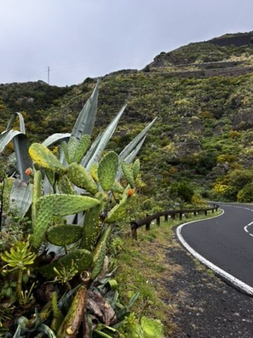
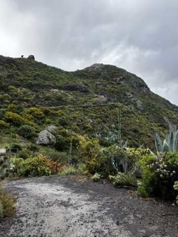
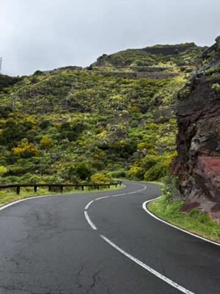
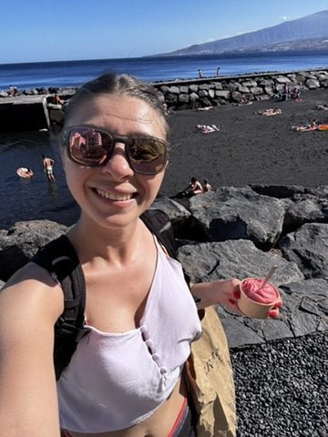
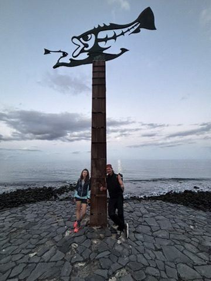
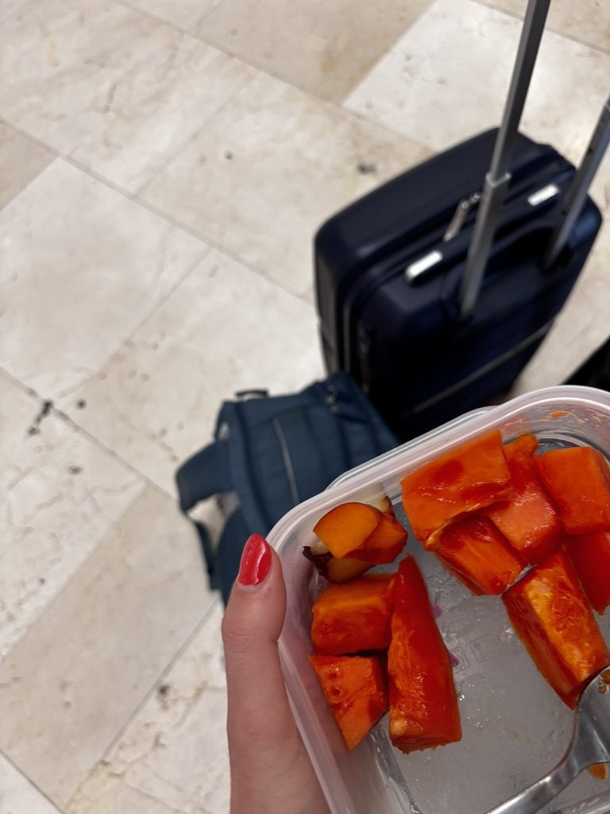

When people picture Tenerife they picture the south — dry, volcanic, bleached white, the kind of sun that turns tourists a very specific shade of red by day three. This is a real and accurate picture. It's also half the story.
The north of Tenerife is something else. Drive up and over the spine of the island, past the treeline, and you enter a version of the place that the beach crowd has never considered and the guidebooks dedicate one paragraph to before returning to resort recommendations. It is green. Genuinely, insistently, surprising green.

This is Tenerife. The same island. Two hours from the beach resorts.
The forest nobody drove to

Laurisilva forest. A Tertiary-era relic ecosystem. It has been here longer than people have been naming things.
The northern forests of Tenerife are laurisilva — a type of subtropical laurel forest that once covered much of southern Europe and North Africa during the Tertiary period, before the climate shifted. The Canary Islands preserved it. Walking through it feels like walking through something that belongs to a different version of the planet — twisted trees covered in moss, ferns at every level, light filtered green, the smell of damp earth and something ancient.
Most of the other visitors to Tenerife were forty minutes south, horizontal on a sun-bed. I was here, in a primordial forest, slightly damp, extremely happy about it.

The north from above. Clouds at eye level. Terraced hillsides going down to a sea you can just make out.
Ice cream after work

Ice cream on the beach after work. This is the remote work lifestyle as it was meant to be lived.
On the working days, the routine was simple: laptop until the afternoon, then the beach, then ice cream. The ice cream was not incidental. It was a deliberate daily reward — something to look forward to from about 2pm onward, which is when most remote work days start to feel like they might never end. The particular ice cream on the particular day in this photo was earned over a difficult afternoon of video calls and a document that refused to cooperate. It tasted exactly right.
This is what people mean when they say remote work is a lifestyle. Not the Instagram part. The ice cream on Tuesday afternoon part. The fact that the reward for finishing your work is a beach, not a commute.
The sunset buddy

Good travel buddy. Sunset lovers. This is the whole category of friendship that solo travel creates.
Travel buddies are their own category of human relationship. They exist outside your normal life — no shared history, no context, no obligation to each other beyond the fact of being in the same place. You watch sunsets together. You go to places you might not have gone alone. You have dinner twice and feel like you've known each other for longer than you have. And then you move on in different directions and the friendship lives in that specific latitude and longitude and nowhere else.
My sunset buddy was one of the good ones. We watched a lot of sunsets. Tenerife has good material to work with.
Last fruit. Next adventure.

Couldn't leave without one last fruit haul. The mango was still warm from the market. I ate it on the way to the airport.
The last thing I bought in Tenerife was fruit from the market. This is not a symbolic act — I just genuinely wanted the fruit — but it has come to feel like one in retrospect. You know a place has worked for you when leaving it involves trying to take the best parts of it with you, even just in a paper bag.
The mango was very good. I ate it on the way to the airport. The next adventure was already in front of me and I was ready for it, which is the only state in which it makes sense to leave anywhere.
Tenerife: three chapters, two weeks, one full moon, a forest older than recorded history, and a mango on the way to the gate. That's a good trip.